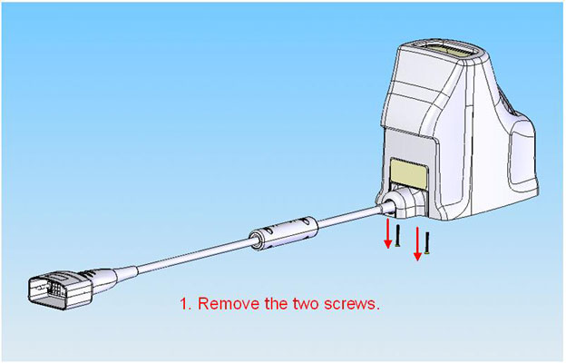
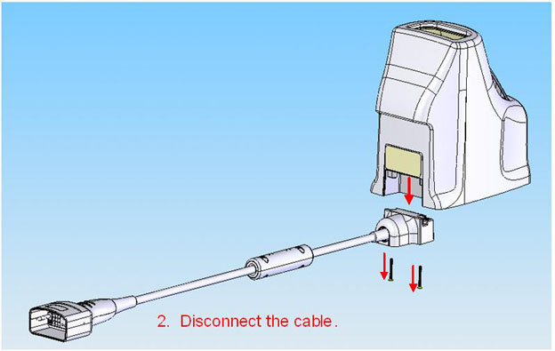

Operating Documentation
Direction 5500113, Rev# 3
Discovery MR750 3.0T Service Methods
Module Version 5.0, Version Date 3/23/10
Operating Documentation |
| Required Persons | Procedure Timing |
| 1 | 30 minutes |
This is the replacement procedure for the 3.0T HD 8-Channel Foot Ankle Coil by Invivo, catalog M3340CB.
Non-Magentic Service Tool Kit, Qty. 1
See Section 5 for lists of the field replaceable units (FRUs) and other accessories.
| ||||
| Replacement procedures are to be performed by an authorized Service Engineer only. | ||||
Cable continuity checks are found in 3T HD 8CH Foot Ankle Coil Troubleshooting.
There are two coil connector mounting screws located at the end of the coil. Remove the two coil connector mounting screws as detailed in Illustration 1.
Illustration 1: Remove Mounting Screws

Remove the coil connector by grasping the coil connector housing and pulling it away from the coil in the inferior direction (see Illustration 2).
Illustration 2: Disconnect Coil Cable

Exercise the latches on the baseplate by moving the blue latch handle back and forth. The latches must move smoothly and lock positively into place. The latches must not loosen or open during the course of an examination. The foot support and coil is capable of a 15 degree Plantar Flexion.
Move the coil from side to side on the baseplate. The coil must move smoothly. Swivel the coil on the baseplate. The coil must move smoothly within a 10-15 degree rotation. Lock the coil into position on the baseplate. The coil must remain in place while locked down, and resume smooth movement when unlocked.
| Description | GE Part # | Invivo Part # |
| 3.0T HD 8-Channel Foot Ankle Coil with Cable | 5273235-2 | 9896-031-10111 |
| 3.0T HD 8-Channel Foot Ankle Coil Cable | 5273235-3 | 9896-031-10121 |
| HD FAC Baseplate Assembly | 5273235-6 | 9896-031-10141 |
| HD 8-Channel FAC Phantom Assembly | 5273235-5 | 9896-031-10151 |
| Small Cylindrical Unified Phantom | 5342680 | -- |
| Cubical Unified Phantom | 5342681 | -- |
The following table lists the replaceable accessories that may be purchased from Invivo Corporation.
| Description | GE Part # | Invivo Part # |
| HD FAC Ankle Pad | 5273235-7 | 4535-300-67681 |
| HD FAC Ramp Pad | 5273235-8 | 4535-300-61081 |
| HD FAC Foot Pad | 5273235-9 | 4535-300-61091 |